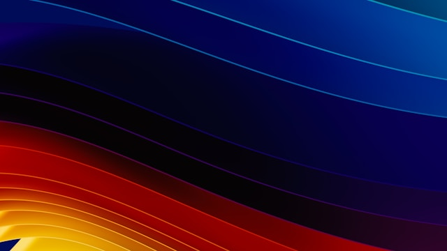

프로젝트에 오신 것을 환영합니다
스프레드시트처럼 구성된 프로젝트 테이블은 이슈와 풀 리퀘스트를 실시간으로 필터링, 정렬, 그룹화할 수 있는 캔버스를 제공합니다. 맞춤 필드와 저장된 뷰를 활용하여 필요에 맞게 자유롭게 구성하세요.
- 생성된 프로젝트
-
PetFriendPrj #4 updated 1 hour ago

스프레드시트처럼 구성된 프로젝트 테이블은 이슈와 풀 리퀘스트를 실시간으로 필터링, 정렬, 그룹화할 수 있는 캔버스를 제공합니다. 맞춤 필드와 저장된 뷰를 활용하여 필요에 맞게 자유롭게 구성하세요.